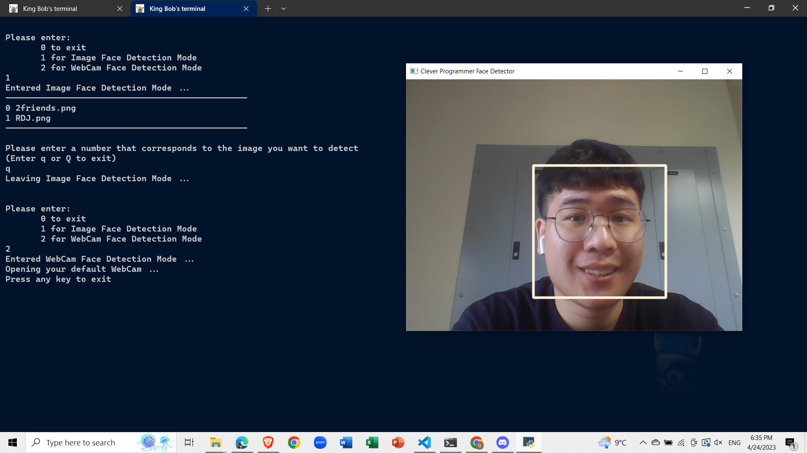

ChatterBox

A discussion platform/application for social media and educational purposes
Participated in the 2022 Google Solution Challenge
Recognized as the only team in USA to get in the Global Top 50 finalist
Hover to read more
ChatterBox
ChatterBox is an Android Application made to participate in the 2022 Google Solution Challenge and was selected in the Global top 50 round. The application is a discussion platform for social media and educational purposes. One of the most significant takeaways from this project is the importance of collaboration and communication. While working on this project, I learned how to effectively work with a team of individuals from different backgrounds and skill sets to achieve a common goal. Furthermore, working on this project allowed me to explore and enhance my software development skills. I gained proficiency in using Firebase Realtime Database as our backend server, which helped me to better understand the importance of a reliable and efficient backend system. Overall, this project has shown me that software development is not just about coding, but it's also about effective communication, collaboration, and continuous learning.
View GitHubTerminal-like Profolio

A website coded in just HTML, CSS, and JavaScript
A Profolio website that provides information when users type in commands
Designed as a final project for DEV PSU in Fall 2022
Hover to read more
Terminal-like Profolio
This is a website that has a terminal-like interface that allows users to gain information about me while typing in commands. The website was designed as a final project in DEV PSU to teach students how to use HTML, CSS, and JavaScript to make an interactive website. Through this project, I revisited and improved my skills in HTML and CSS, which are essential for any web developer. I also learned how to structure a project and use appropriate naming conventions to ensure the code is readable and maintainable. I hope visitors to this project learn that I am a skilled and creative software engineer who is always looking for innovative ways to solve problems.
View GitHubFace Recognition App

Utilized datasets from OpenCV
Easy terminal UI and commands to run
A self-project made in Summer 2022 to learn about Computer Vision
Hover to read more
Face Recognition App
This is a terminal application coded in Python that allows users to detect faces in images or live cameras. This project taught me how to work with image datasets and utilize them to train a model for facial recognition while using OpenCV’s trained data set. Additionally, I learned how to create an easy-to-use terminal UI with intuitive commands for users to operate the app effectively. Through this project, I improved my skills in Python, which is essential for any computer vision application. I also revisited and improved my skills in computer vision techniques, such as image processing and feature extraction. This project showcases my ability to develop applications that utilize complex algorithms and techniques to solve real-world problems. Additionally, it demonstrates my ability to create user-friendly interfaces that make complex tasks accessible to users.
View GitHub